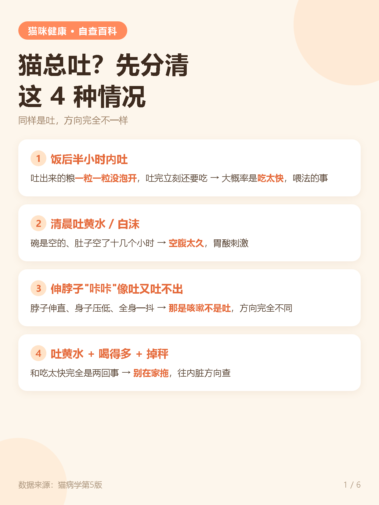
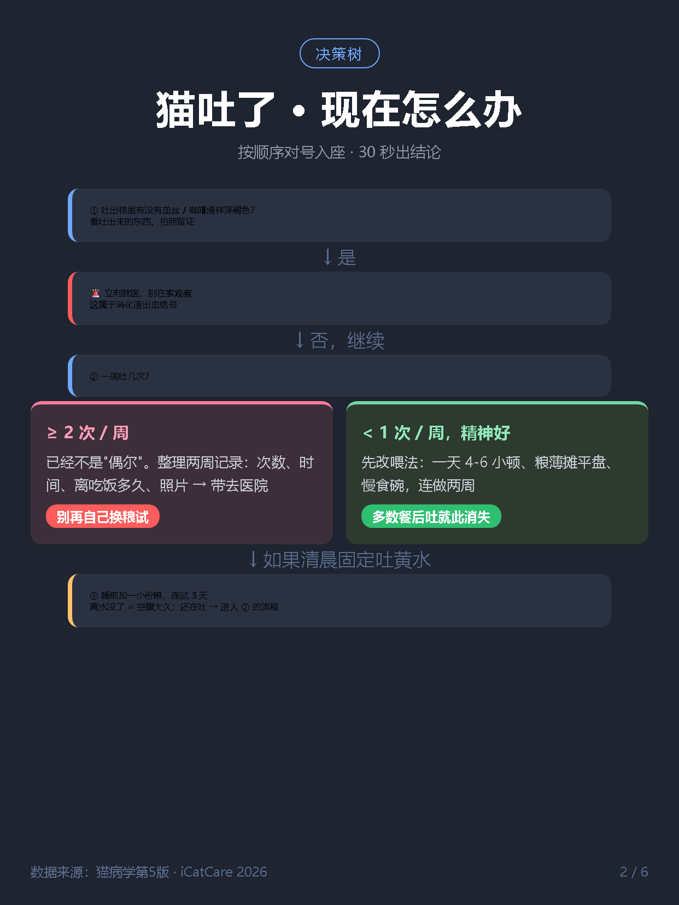
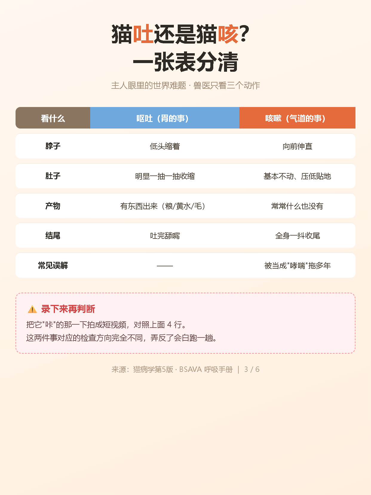
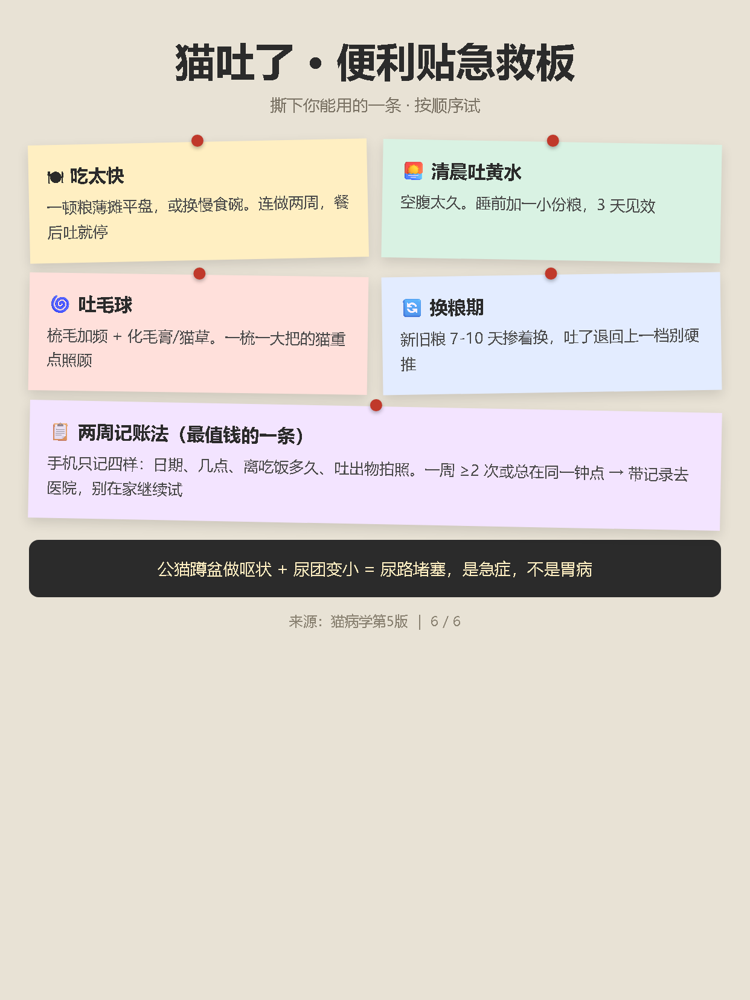
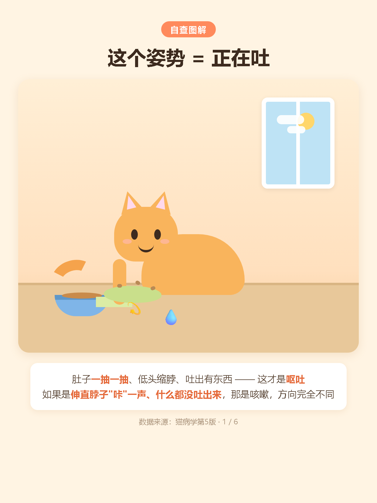
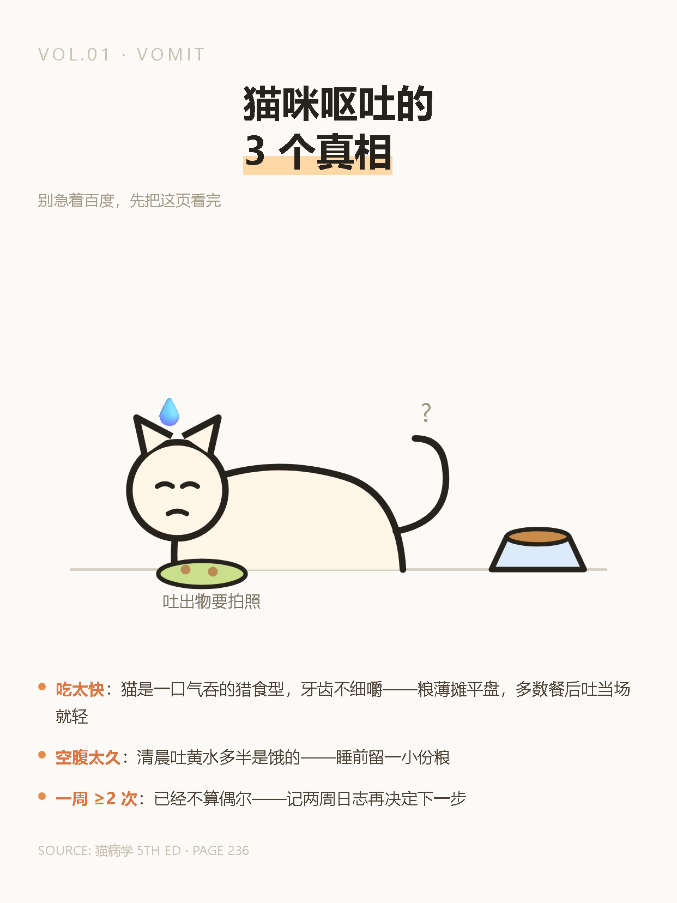
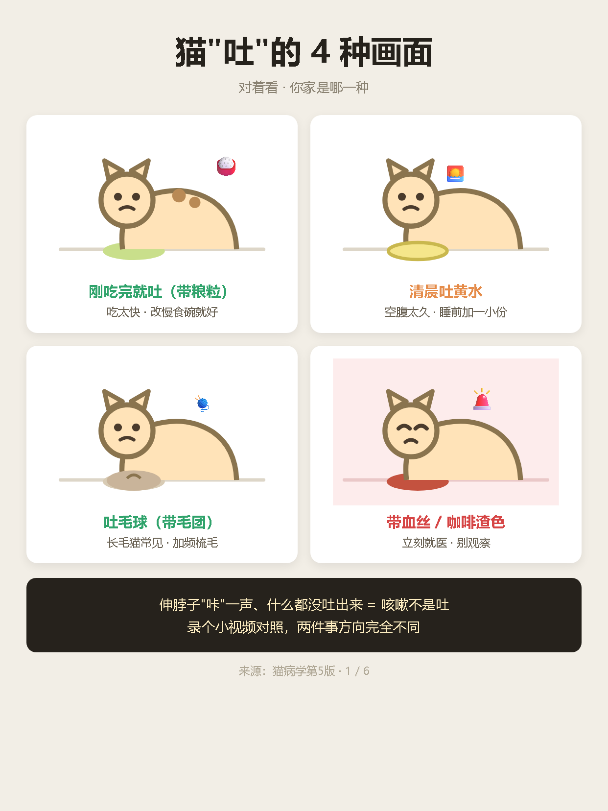
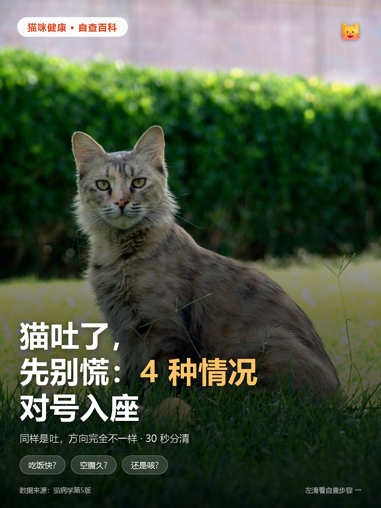
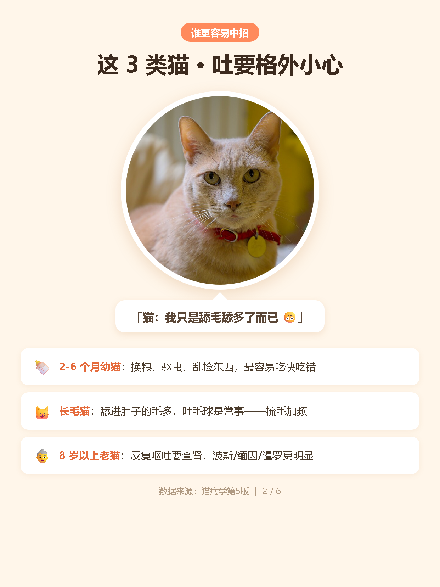

猫呕吐 · 6 种风格测试图
1242×1656 · 小红书 3:4 · 数据来自底表（猫病学第5版）· 点击图片放大

风格 1 · 奶油知识卡片
干货合集型 · 最像平台爆款模板

风格 2 · 深色决策树
决策流程型 · 按顺序对号入座

风格 3 · 对比表格
「一图看懂」对比型 · 吐 vs 咳

风格 6 · 便签拼贴
便利贴 · 信息密度高的 tips
怎么测「会不会被识别成 AI」：挑 1-2 张直接发小红书（建议风格 1 或 5），观察：① 发布时有没有弹出「AI 生成内容」强制声明；② 24 小时内流量是否正常（没有被限流的迹象）。
注意：这批图是 HTML/CSS 排版渲染的，不含文生图模型的水印或特征，和人工用设计软件做的图在数据层面无法区分。
🐾 带猫画面的场景图（v2）
SVG 代码绘制 · 非文生图 · 同样无 AI 检测点

画面 A · 扁平可爱场景
橘猫拱背吐 · 暖色家居 · 主推

画面 B · 极简线稿
线条猫 · 大留白 · 高级感

画面 C · 四格对比漫画
4 种吐的画面 · 对号入座
画面 vs 排版：上一批 6 张是纯文字排版（信息图），这一批 3 张有猫的场景插画。小红书科普号两种混用：封面用画面图，内页用排版图。
📷 实拍网图合成（v3 · 拟真测试）
Wikimedia 自由版权照片 + HTML 排版合成 · 拟真画面测试

合成 1 · 实拍情绪封面
照片全屏 + 渐变压字 · 小红书封面标准做法

合成 2 · 实拍嵌排版
圆形抠图 + 对话气泡 + 列表